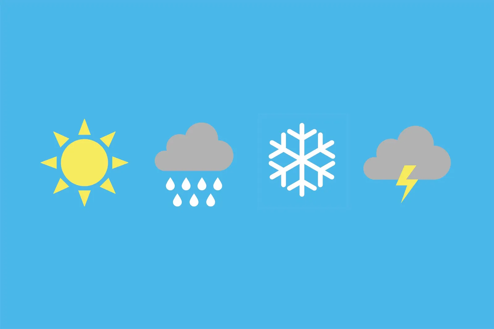

Tools & Exercises
What Tools Are Available
-
Pomodoro Focus Timer – A JavaScript-based timer where users can start a 25-minute study session. When the timer ends, the site displays a motivational message to encourage short breaks and sustainable study habits.

- Mindful Weather & Advice Widget – This feature uses two APIs: Open-Meteo for current weather and AdviceSlip for random life advice. For example, it might display: “It's 65ºF and sunny — a great day to stay focused! Here's your advice: ‘Start where you are. Use what you have. Do what you can!’” 
Why Tools Matter
FocusLab includes a set of interactive study tools designed to help students move from theory into practice. Although many people understand what attention is in the abstract, it can still be difficult to apply these ideas when facing real-world pressures such as deadlines, distractions, and digital overload. Tools are therefore important because they give visitors something concrete to try, whether they have ten minutes between classes or an hour to study at home.
Our goal is not to enforce perfection or rigid discipline. Instead, these features encourage experimentation and reflection. By trying simple activities over time, students begin to observe how small adjustments shape their focus, energy, and motivation.
Pomodoro Focus Timer
The Pomodoro Timer is one of the core tools included in FocusLab. It follows a well-known method that breaks work into twenty-five minute focus periods followed by short breaks. Visitors can start the session, work with attention until the timer finishes, and then take a pause before deciding whether to begin the next cycle. This method emphasizes rhythm rather than intensity and encourages a kinder approach to productivity.
Students can use this timer for reading, writing, language study, or focused note-taking. Over time, repeated cycles build endurance and help people recognize when their attention naturally rises and falls.
Pomodoro Focus Timer
Press “Start Timer” to begin a 25-minute focus session.
Mindful Weather & Advice Widget
This widget combines two APIs—Open-Meteo, which provides real-time weather data, and AdviceSlip, which returns simple reflective messages. When visitors check the tool, they see the current weather conditions for a sample location, along with a small piece of guidance such as “Take a moment to breathe.” The intention is to introduce moments of grounding, even when academic tasks feel heavy.
Instead of overwhelming students with data, the widget offers just enough contextual awareness to shift attention and encourage self-awareness. While weather information may seem unrelated to studying, it reminds students that their bodies, environments, and habits influence their ability to focus.
What Visitors Can Do With These Tools
Students are encouraged to use the tools in whatever way suits them best. For example, someone might start the Pomodoro Timer before reviewing lecture notes. Another might open the Advice widget and reflect before planning their tasks for the day. Rather than prescribing one correct way of working, FocusLab supports autonomy: students can explore, observe, and adapt.
The tools are intentionally simple so that visitors feel comfortable using them repeatedly. A simple timer or encouraging prompt can become a daily touchpoint that interrupts cycles of avoidance, helps reset attention, or signals a brief pause when work begins to feel overwhelming.
A Space for Growth
FocusLab treats personal productivity not as a competition but as a process of learning. The tools page serves as a practical space where visitors can test strategies, make adjustments, and build a more compassionate approach to studying. Our hope is that these resources become small supports that help students navigate stress, improve concentration, and develop a sustainable relationship with learning.